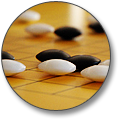

The Go ActionScript
Animation Platform ("GOASAP") is a lightweight, portable set of generic base classes for buliding AS3 animation tools.
Go provides structure and core functionality, but leaves the specifics to you. You are welcome to modify any or all of the classes
in the Go package.
Go is community initiative is being led by MosesSupposes.com, source
files are released under the MIT license.